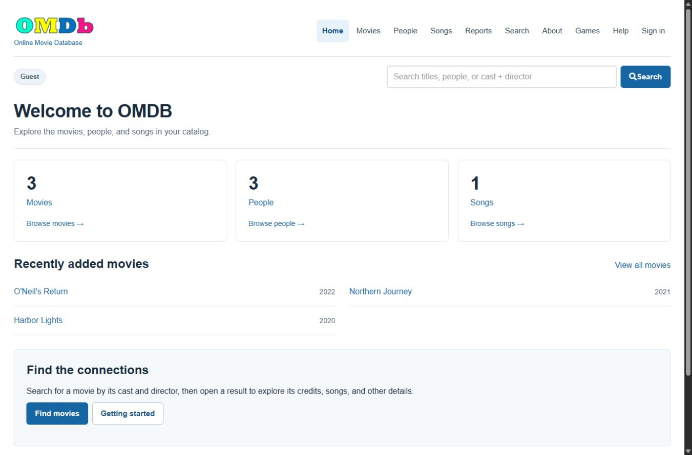
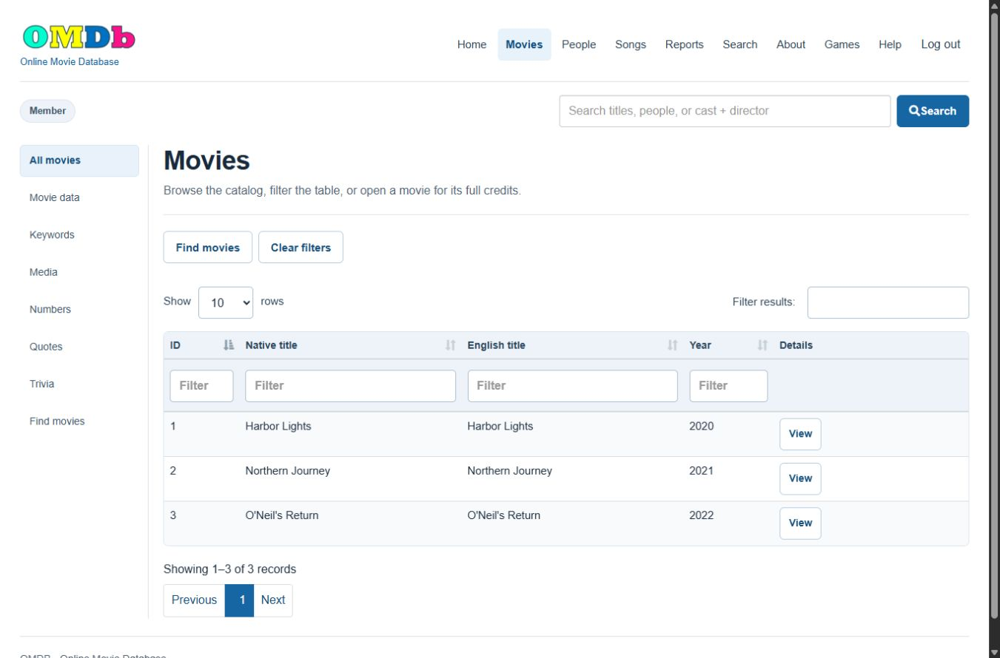
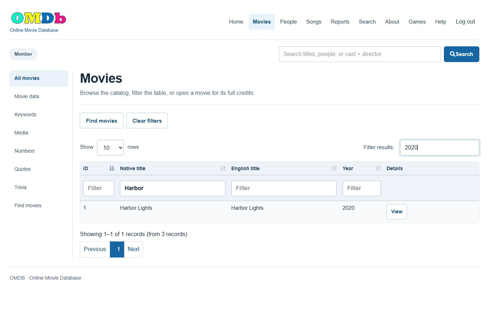
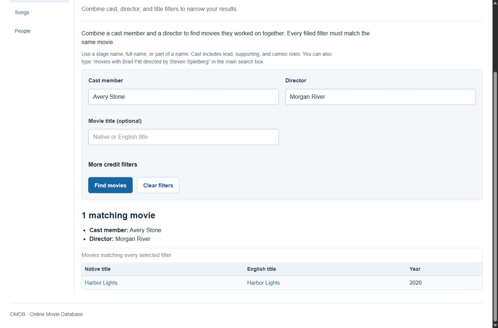
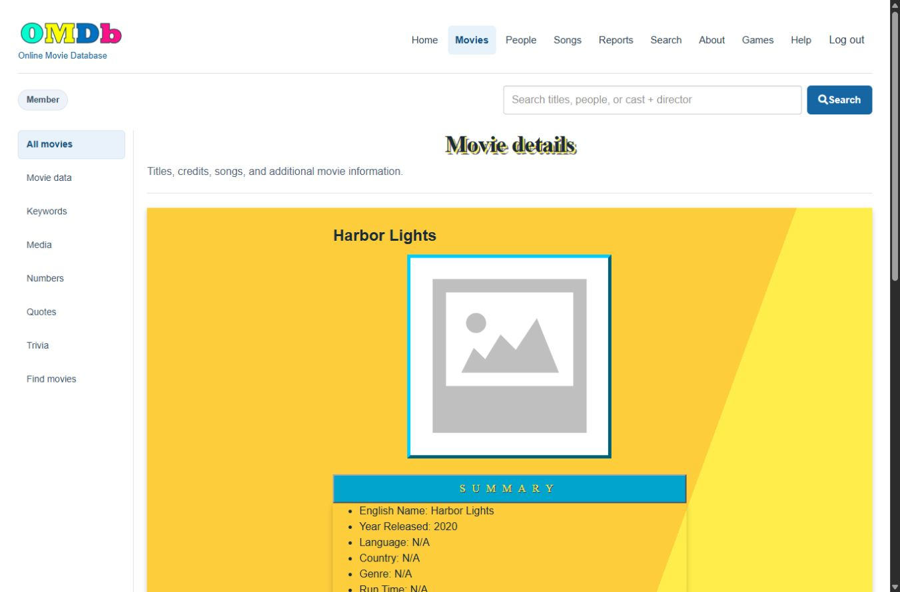
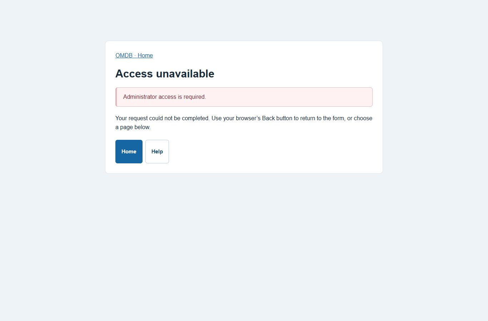
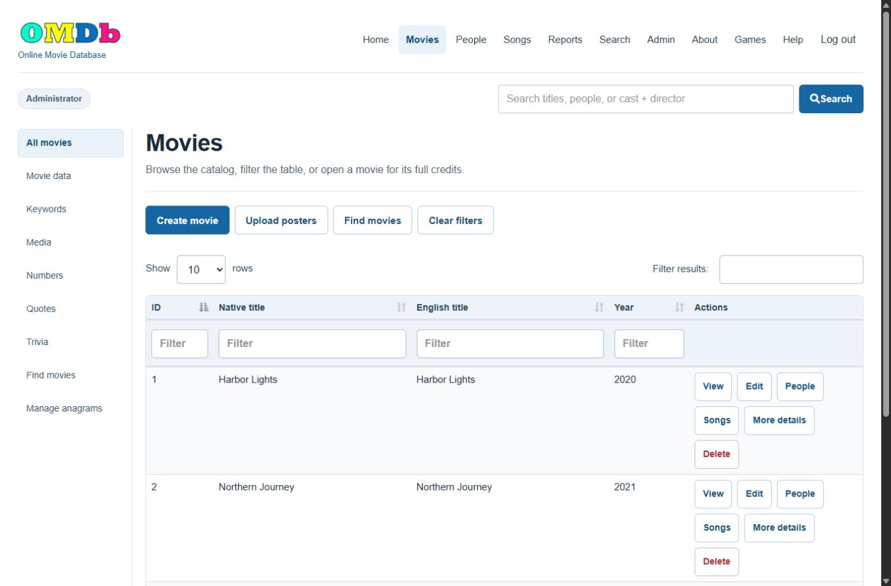
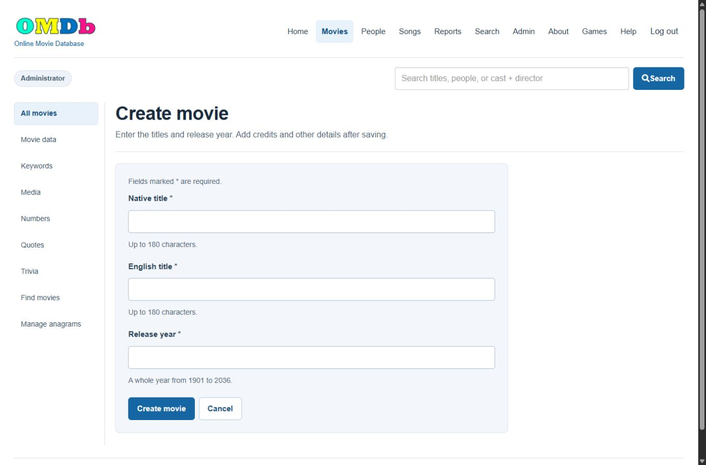
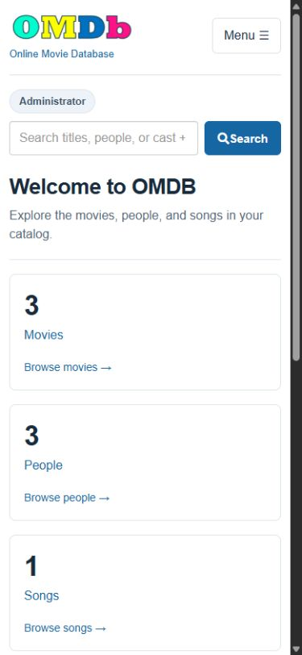

OMDB2 offline demonstration
This is a screenshot walkthrough of the verified local app, captured November 17, 2026. It needs no server or internet connection. It does not execute database operations.
Use Previous / Next or the left / right arrow keys. Select Show all screens to scroll or print.
1. Home and recently added movies
The home page shows catalog totals and the newest movie records. These fictional examples keep the demonstration repeatable.

2. Member catalog
A member can browse and filter. Create, edit, delete and admin navigation controls are absent.

3. Catalog filters
A native-title filter and the global filter narrow the list to Harbor Lights. Clear filters resets both searches and restores all three movies.

4. Cast and director together
Avery Stone plus Morgan River returns one matching movie: Harbor Lights. Every selected condition must match the same movie.

5. Connected catalog records
Movie details include existing people and soundtrack relationships. The test suite separately verifies relationship writes and cascade cleanup.

6. Server-side admin protection
Opening the admin setup URL as a member returns an access-denied response. Hiding menu items does not replace the server check.

7. Administrator controls
The administrator sees create, edit, relationship and delete actions. The server checks the role again for each write.

8. Create movie form
The administrator form explains required fields and limits. This captured walkthrough does not submit or delete a record.

9. Phone layout
The home page fits a 390-pixel viewport. The navigation collapses into Menu and the content stacks vertically.
